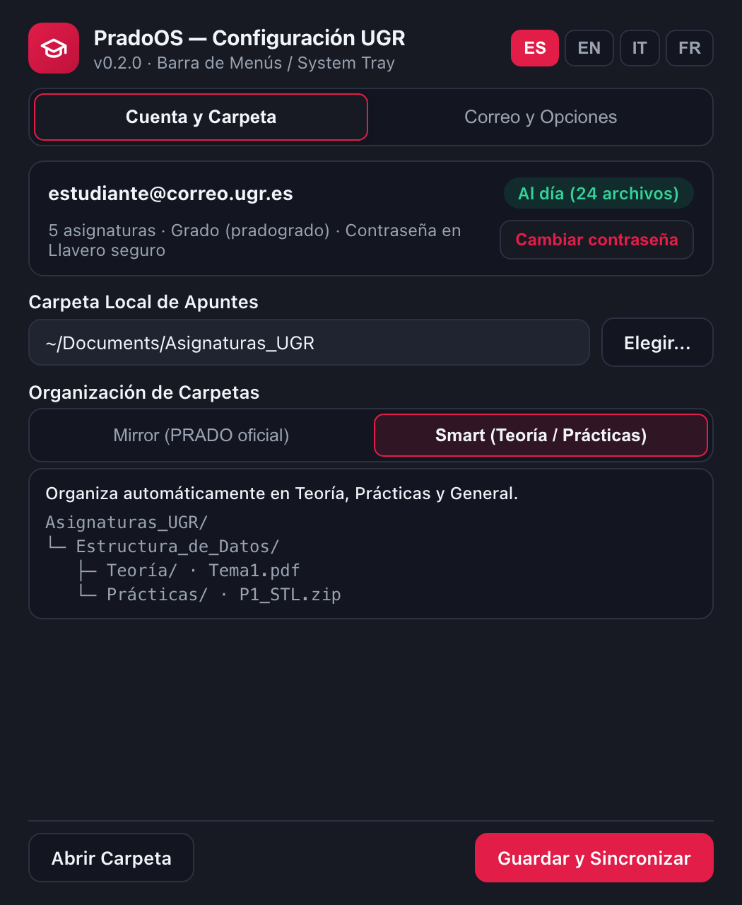

Tus apuntes y entregas de PRADO UGR, sincronizados en tu equipo.
Olvídate de entrar cada día a PRADO a descargar PDFs uno por uno o revisar cuándo vence una práctica. PradoOS vive en tu Barra de Menús o Bandeja del Sistema y lo mantiene todo al día.
Primera apertura en 2 pasos: 1. Abre el .zip descargado · 2. Haz clic derecho → Abrir una sola vez (macOS) o pulsa Más información → Ejecutar de todas formas (Windows).
Instalación opcional desde Terminal
curl -fsSL https://raw.githubusercontent.com/LorSt4r/prado-os/main/install.sh | bash

Configuración inicial en 3 pasos de 30 segundos
Funciona en segundo plano sin conocimientos técnicos previos.
Descarga y abre PradoOS
Descarga la app para macOS, Windows o Linux y ábrela en 2 clics sin configurar nada en la terminal.
Conecta tu cuenta @correo.ugr.es
Introduce tu correo UGR, elige tu carpeta local y verifica tu dispositivo con el código 2FA válido por 30 días.
Todo en tu Barra de Menús
Abre asignaturas al instante, consulta fechas límite y deja que los apuntes nuevos bajen solos.
Diseñado para el día a día universitario
Sincronización local que protege tus propios archivos y entregas.
Protección anti-sobrescritura (SHA-256)
Si anotas un PDF, editas un cuaderno .ipynb o modificas un código de prácticas, PradoOS nunca pisa tu trabajo: guarda la copia actualizada del profesor al lado.
Modo Mirror o Smart a tu gusto
Mantén exactamente las carpetas oficiales del profesor (Mirror) o clasifica automáticamente en Teoría, Prácticas y General (Smart).
Entregas en Barra de Menús y Google Calendar
Visualiza los días restantes para cada práctica o examen, abre el calendario deadlines.ics o sincroniza con tu cuenta de Google Calendar.
Reenvío selectivo de @correo.ugr.es
Recibe únicamente los avisos académicos de PRADO y de tus profesores directamente en tu correo habitual, filtrando spam institucional.
Privacidad y seguridad por diseño
Tu cuenta universitaria nunca toca servidores externos ni bases de datos ajenas.
100% local en tu Llavero del sistema
Keychain · SecretServiceLas credenciales UGR se guardan exclusivamente en macOS Keychain, Windows Credential Manager o Linux SecretService.
Cero telemetría ni servidores intermediarios
TLS · *.ugr.esPradoOS se conecta únicamente de tu ordenador a prado.ugr.es, sts.ugr.es y correo.ugr.es usando ritmo conservador de peticiones.
Carpeta de apuntes limpia
~/.config/prado (0700)Nunca escribe cookies, tokens ni bases de datos dentro de tu carpeta de Google Drive, iCloud o OneDrive.
Software libre auditable (GNU AGPL-3.0)
AGPL-3.0 · SECURITY.mdCódigo fuente abierto para estudiantes y comunidad universitaria, con suite de pruebas automatizadas y política SECURITY.md.